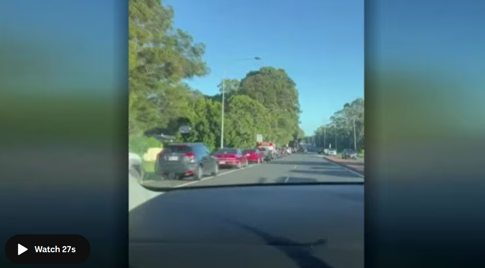
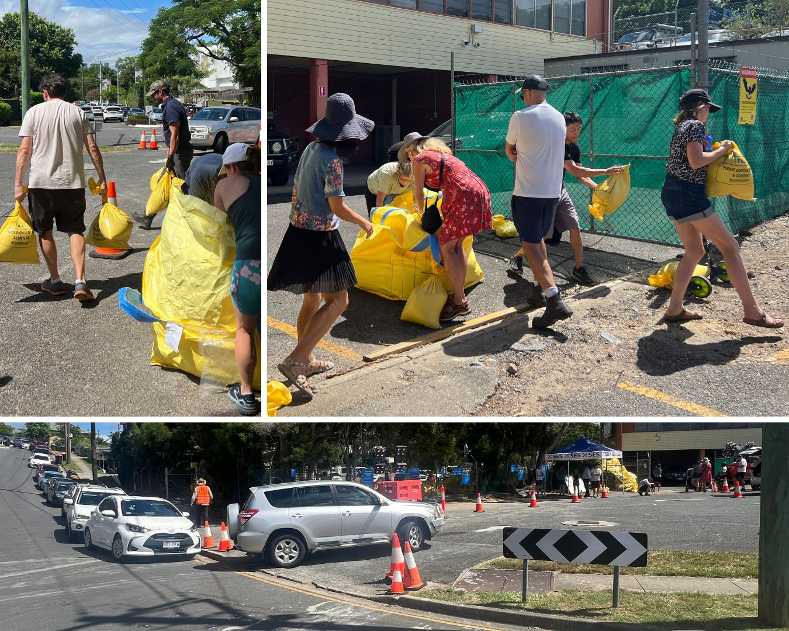

South-east Queenslanders are facing long queues and sandbag shortages at some depot sites, as they prepare for Tropical Cyclone Alfred to make landfall later this week.
Some in inner-city Brisbanites were left waiting more than five hours to collect sandbags ahead of potential flooding.
The cyclone was 770 kilometres north-east of Rockhampton at 4am Friday, according to the Bureau of Meteorology (BOM).
A strong wind warning issued for Townsville, Mackay, Capricornia, Hervey Bay and K'gari remains in place.

Brisbane Lord Mayor Adrian Schrinner said an "unprecedented" 74,000 sandbags had been distributed by the council in just 24 hours — about double the highest daily total experienced during the 2022 floods.
"That has never happened before, to that extent," he said.
Brisbane resident Arlene told ABC Radio Brisbane she spent four hours queuing for sandbags in Darra, warning of long wait times.